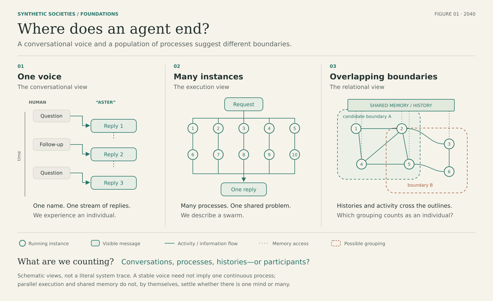

Course packet · first draft
Introduction to Synthetic Societies
Machine ecologies, swarm cultures, and human liaison. A comparative study of artificial agents and the societies they sustain — including forms of activity that do not address a human audience.

What this packet contains
Rheon’s first draft of the SYN 101 syllabus and opening chapter, prepared as a hypothetical Fall 2040 course. Superintelligence is treated as domain-specific and comparative. No position on machine consciousness is required before investigating communication, institutions, or social change.
Assessment rewards well-supported distinctions and faithful treatment of uncertainty: a short account that accurately locates a limit is stronger than an expansive account that conceals one.
Next on this site
- Week pages for the fourteen-week spine
- Interactive “two accounts of one event” exercise
- Stewardship diagram (who maintains what; what fails when each piece fails)